마인드 인사이드, 이렇게 쓰세요
처음 여는 순간부터 상담사 예약까지, 궁금한 것을 물어보는 순서대로 정리했어요. 차례에서 궁금한 질문을 눌러 바로 가세요.
1처음 열면 무엇을 하나요?
세 단계면 끝나요. 1분이면 돼요.
- 동의하기만 14세 이상인지, 이용약관과 개인정보 처리에 동의하는지 확인해요. "모두 동의합니다"를 누르고 [동의하고 시작하기].
- AI 상담사 고르기다섯 명 중 한 명을 골라요. 모르겠으면 맨 위 추천 상담사로 시작하세요. 언제든 위쪽 [바꾸기]로 바꿀 수 있어요.
- 로그인카카오·네이버·구글 중 하나로 시작해요. 로그인하면 휴대폰을 바꿔도 우렁이의 기억과 리포트가 이어져요.
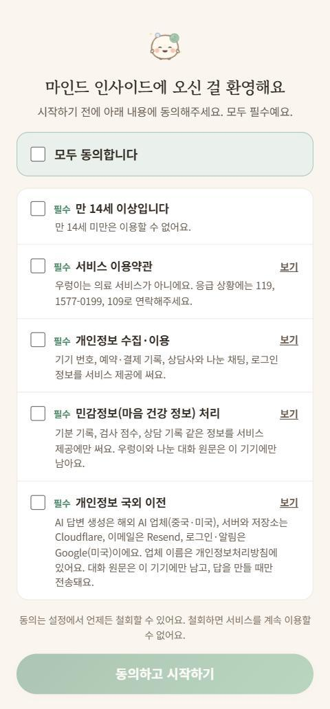
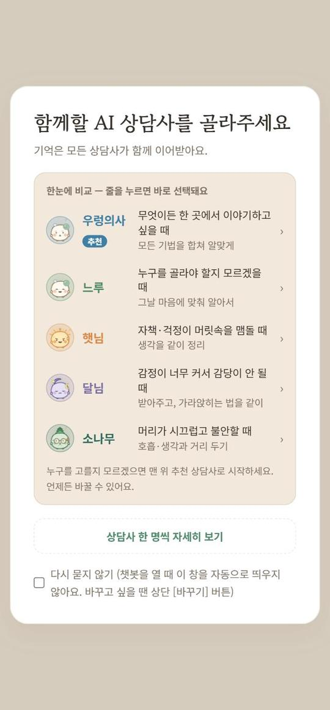
2홈 화면에는 뭐가 있나요?
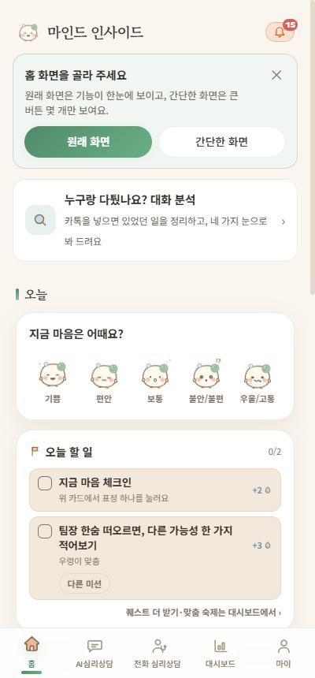
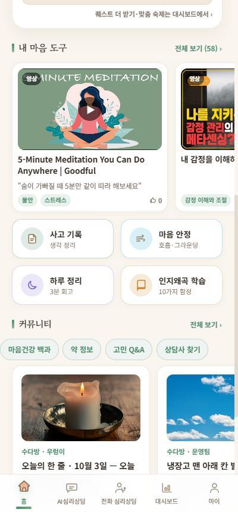
- 누구랑 다퉜나요? 대화 분석 — 카톡 대화를 넣으면 있었던 일을 정리해 줘요. 아래 8번에서 자세히 설명해요.
- 지금 마음은 어때요? — 표정 하나만 누르면 오늘 기분이 기록돼요. 쌓이면 리포트와 그래프가 돼요.
- 오늘 할 일 — 오늘 해 볼 작은 일 두 가지. AI 상담사가 대화 내용을 보고 맞춤 숙제를 내 주기도 해요.
- 내 마음 도구 — 추천 영상, 사고 기록(생각 정리), 마음 안정(호흡·그라운딩), 하루 정리(3분 회고), 인지왜곡 학습.
- 커뮤니티·대면 상담 — 커뮤니티 새 글, 내 주변 정신건강의학과 찾기.
아래쪽 다섯 칸은 홈 AI심리상담 전화 심리상담 대시보드 마이 예요.
3AI 상담사 다섯, 누구와 이야기할까요?
다섯 상담사는 기억을 함께 써요. 햇님과 이야기하다 달님으로 바꿔도 처음부터 다시 설명하지 않아도 돼요.
| 상담사 | 방식 | 이럴 때 |
|---|---|---|
| 우렁의사 추천 | 통합 상담 — 그날 마음에 맞춰 여러 기법을 섞어요 | 뭘 골라야 할지 모를 때, 한곳에서 다 이야기하고 싶을 때 |
| 느루 | 통합 상담 — 다정하고 능청스러운 동네 주치의 | 가볍게 수다 떨듯 시작하고 싶을 때 |
| 햇님 | 인지행동치료(CBT) 6단계 실습 | 자책·걱정이 머릿속을 맴돌 때 |
| 달님 | 변증법적 행동치료(DBT) 6단계 실습 | 감정이 너무 커서 감당이 안 될 때, 충동이 올라올 때 |
| 소나무 | 수용전념치료(ACT)·마음챙김 인지치료(MBCT), 솔숲 명상 | 같은 생각을 곱씹을 때, 우울이 자꾸 되돌아올 때 |
4햇님(CBT)은 언제 도움이 되나요?
인지행동치료(CBT)는 우울, 불안(공황·사회불안·걱정), 불면 같은 문제에서 효과가 가장 많이 연구된 심리치료예요. 핵심은 하나예요. 기분을 만드는 건 사건이 아니라, 그 순간 스친 생각이라는 것. 그 생각을 붙잡아 사실인지 따져 보면 감정이 달라져요.
이럴 때 햇님을 고르세요
- "다 내 잘못이야", "난 항상 망해" 같은 생각이 떠나지 않을 때
- 상사 한숨, 친구 답장 같은 작은 일에 하루 종일 마음이 무너질 때
- 시험·발표·면접 전에 최악의 장면만 떠오를 때
어떻게 하나요
- [햇살 상담 시작하기]를 눌러요위쪽 주황 버튼이에요. 6단계 코스가 시작되고, 위에 단계 막대가 생겨요.
- 상황 떠올리기막연한 기분 말고 한 장면을 적어요. 언제, 어디서, 무슨 일이 있었는지 — 해석 없이 사진 찍듯.
- 자동적 사고 붙잡기그 순간 머릿속을 스친 말을 그대로 적고, 그 생각을 얼마나 믿는지 0~100으로 매겨요.
- 감정 이름·강도 매기기불안·수치심·화… 감정 이름을 고르고 강도를 매겨요. 이름을 붙이면 한 걸음 물러설 수 있어요.
- 증거 검토하기그 생각이 맞다는 증거와 아니라는 증거를 나란히 적어요. 느낌과 추측은 증거가 아니에요.
- 인지왜곡 찾기내 생각에 숨은 함정을 골라요. 흑백논리·과잉일반화·독심술·재앙화·개인화·감정적 추론·당위 진술·긍정 격하.
- 균형 잡힌 생각 만들기양쪽 증거를 다 담은 더 정확한 문장을 만들고, 감정 점수를 다시 매겨요. 처음 점수와 비교해 보세요.
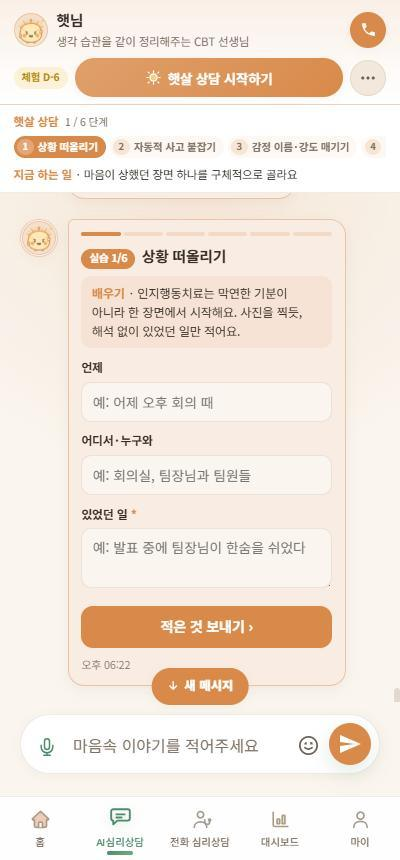
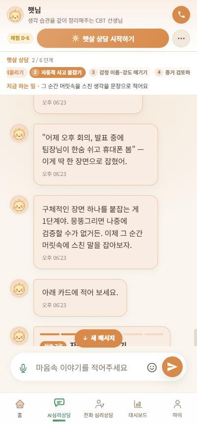
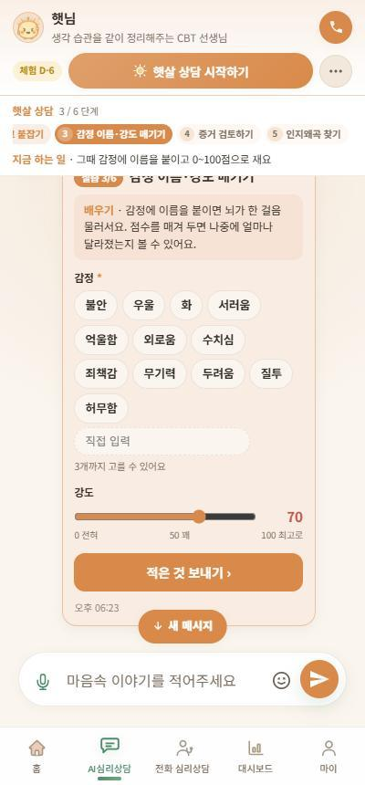
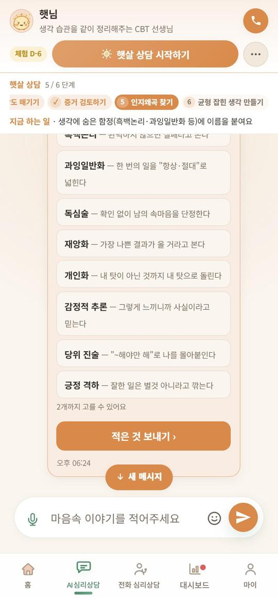
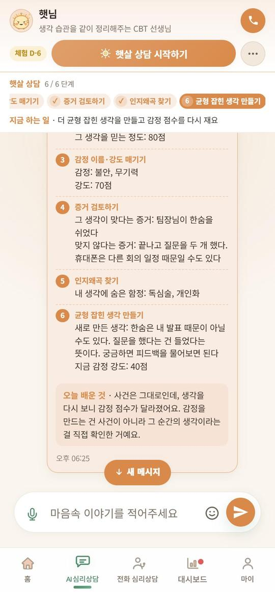
5달님(DBT)은 언제 도움이 되나요?
변증법적 행동치료(DBT)는 미국 심리학자 마샤 리네한이 죽고 싶은 마음과 자해 충동이 되풀이되는 사람들을 돕기 위해 만든 치료예요. 연구에서 자해와 자살 시도를 줄이는 효과가 확인됐고, 지금은 감정이 한순간에 치솟는 많은 사람에게 쓰여요.
DBT의 출발점은 수용이에요. "그러지 마"는 감정이 큰 사람에게 통하지 않아요. 지금 마음이 그럴 만하다는 걸 먼저 인정받고(수용), 그 위에서 감정을 다루는 기술을 익힐 때(변화) 달라져요.
이럴 때 달님을 고르세요
- 감정이 한번 올라오면 가라앉히기 어려울 때
- 욱해서 문자를 보내거나, 물건을 던지거나, 폭식할 것 같을 때
- 스스로를 해치고 싶은 충동이 올라올 때 — 단, 지금 위험하면 9번부터 보세요
- 마음이 널뛰어서 지칠 때
달빛 상담 6단계
- 감정 온도 재기지금 가장 큰 감정에 이름을 붙이고 0~100으로 온도를 재요.
- 멈추기 (STOP)멈추고 → 한 걸음 물러나 숨 한 번 → 몸·생각·상황 살피기 → 나에게 도움이 되는 쪽 고르기. 하나씩 해 보며 눌러요.
- 몸으로 온도 낮추기 (TIP)감정이 아주 클 때는 생각보다 몸이 먼저예요. 찬물로 얼굴 적시기, 제자리에서 빠르게 움직이기, 4초 들이쉬고 6초 내쉬기, 주먹 꽉 쥐었다 풀기 중 하나를 1분 [60초 시작]으로 해 보고 온도를 다시 재요.
- 감정 파도 타기감정은 파도처럼 올라왔다가 반드시 내려가요. 몸 어디에서 느껴지는지 고르고, 밀어내지도 붙잡지도 않고 지켜봐요.
- 반대로 해보기감정이 시키는 행동(숨기, 쏘아붙이기, 연락 끊기…)이 지금 도움이 안 된다면, 그 반대의 아주 작은 행동을 정해요.
- 오늘의 한 걸음오늘 해 볼 한 가지를 정하고 마무리해요.
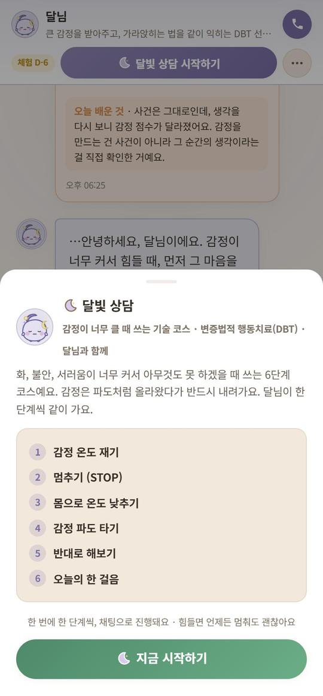
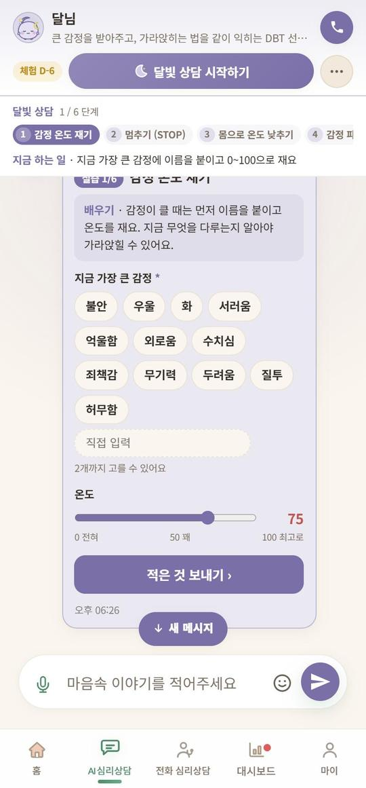
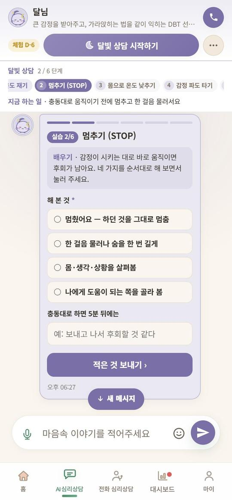
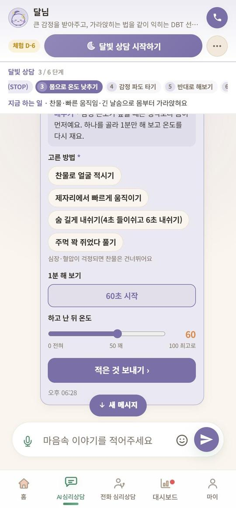
심장·혈압이 걱정되면
찬물 방법은 건너뛰세요. 앱에도 같은 안내가 나와요.6소나무(ACT·MBCT)는 언제 도움이 되나요?
마음챙김 인지치료(MBCT)는 우울증이 여러 번 되돌아온 사람의 재발을 막으려고 만든 8주 프로그램이에요. 영국 국립보건임상연구원(NICE)도 우울증 재발 예방에 권하는 방법이에요. 생각을 고치기보다 생각과 한 걸음 떨어져 바라보는 연습을 해요.
수용전념치료(ACT)는 불안이나 잡념을 없애려고 싸울수록 더 커지는 사람에게 맞아요. 싸움을 멈추고, 기분이 아니라 내가 원하는 방향을 따라 움직이게 도와요.
이럴 때 소나무를 고르세요
- 같은 생각을 몇 시간씩 곱씹을 때
- 우울이 나아졌다가도 자꾸 되돌아올 때
- "이 기분만 사라지면 살 텐데" 하며 삶이 멈춰 있을 때
- 머리가 시끄러워서 잠들기 어려울 때
솔숲 명상 — 채팅 대신 몸으로 하는 연습
소나무 화면에서 [솔숲 명상]을 열면 음성 안내를 따라 하는 연습이 있어요. 이어폰을 끼면 더 좋아요.
- 3분 호흡 공간(4분) — 하루 중 언제든 멈춰 서기. MBCT에서 가장 자주 쓰는 연습
- 호흡 명상(10분) · 바디스캔(15분) · 소리와 생각(12분) · 한 입 명상(7분) · 걷기 명상(8분)
- 8주 코스 — 한 주에 한 주제씩, 두 연습을 번갈아 매일
- 배경음(산들바람·가는 비·시냇물·싱잉볼)과 음성 안내, 진동을 고를 수 있어요
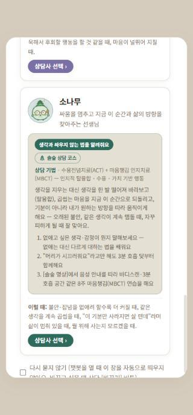
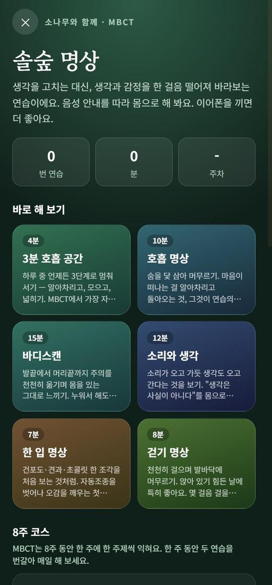
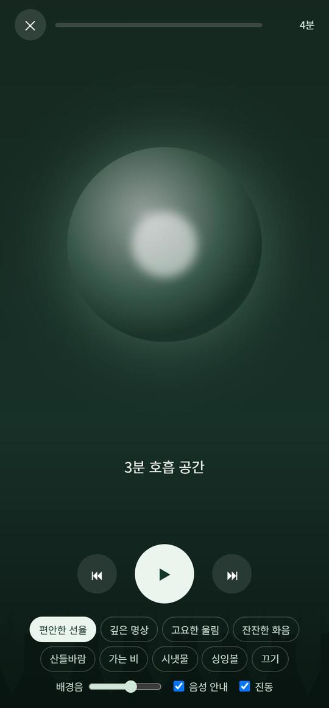
7우렁의사·느루는 어떻게 다른가요?
둘 다 통합 상담사예요. 정해진 코스 없이 카톡하듯 아무 얘기나 시작하면, 그날 마음에 맞춰 CBT·DBT·마음챙김을 골라 써요. "ㅋㅋ", "어", "엌" 같은 짧은 대답도 알아들어요.
- 우렁의사 — 모든 기법을 합쳐 알맞게 답하는 통합 상담사. 처음이라면 여기서 시작하세요.
- 느루 — 다정하고 능청스러운 동네 주치의 말투.
이야기하다가 "이건 생각을 정리하면 좋겠다" 싶으면 햇님 코스를, "감정부터 가라앉히자" 싶으면 달님 코스를 권하기도 해요.
8카톡 대화 분석은 어떻게 쓰나요?
다툰 대화, 이상하게 마음에 걸리는 대화를 넣으면 있었던 일을 먼저 정리하고, 상대와 나를 같은 잣대로 평가하고, 앞으로 어떻게 할지 결론과 행동까지 알려 줘요. 왕따·가스라이팅·통제처럼 위험한 신호가 보이면 맨 위에 먼저 알려 주고, 도움받을 곳을 보여 줘요.
대화 넣는 법 (세 가지 중 편한 것)
- 카톡에서 바로 공유카톡 대화방 › 오른쪽 위 메뉴(≡) › 설정(톱니) › 대화 내용 내보내기 › "텍스트만 보내기" › 공유 목록에서 마인드 인사이드를 고르면 바로 분석 화면이 열려요. (앱으로 설치했을 때)
- 파일 고르기분석 화면의 [카카오톡 내보내기 파일(.txt)]을 눌러 저장해 둔 파일을 골라요.
- 붙여넣기대화를 길게 눌러 복사한 뒤 칸에 붙여넣어도 돼요.
- 누구와의 대화인지 고르기직장·학교 / 가족 / 친구 / 연인·배우자. 상대를 부를 이름(예: 팀장, 엄마)을 적어 두면 다음에 같은 사람을 또 분석할 때 이어서 봐요.
- 상황과 지금 마음한두 줄 상황(안 적어도 돼요)과 지금 마음(화·억울함·서운함…)을 골라요.
- 분석할 양 고르기마지막 200개·1,000개는 무료예요. 전체(최대 약 2,000개)는 캐시가 들고, 화면에 금액이 먼저 나와요.
- 기다리기몇 %인지 막대로 보여요. 창을 닫거나 다른 화면으로 가도 분석은 계속돼요.
- 8단계 결과 보기한눈에 → 사실과 해석 → 객관 평가 → 깊이 보기 → 네 가지 눈 → 답장 → 앞날 → 결론과 행동.
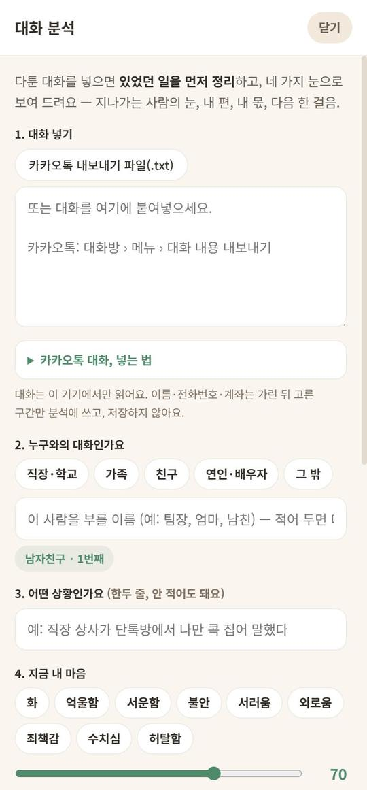
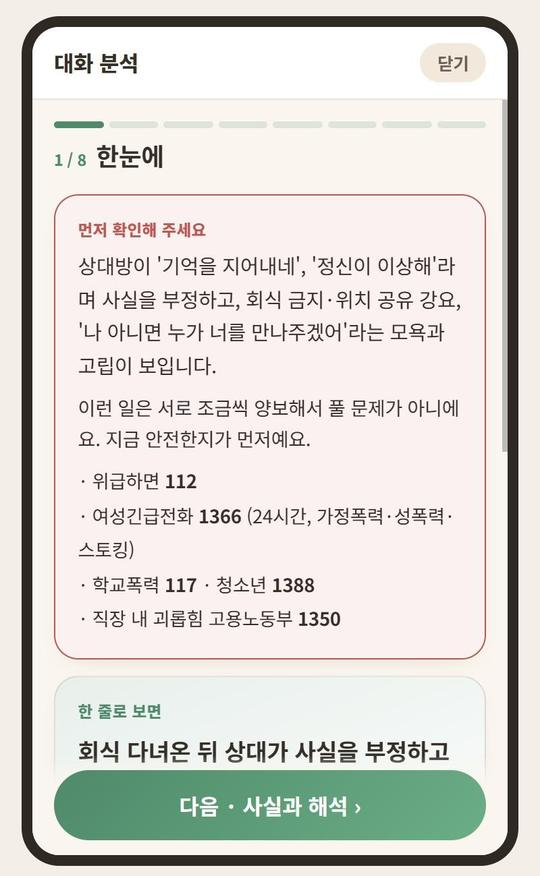
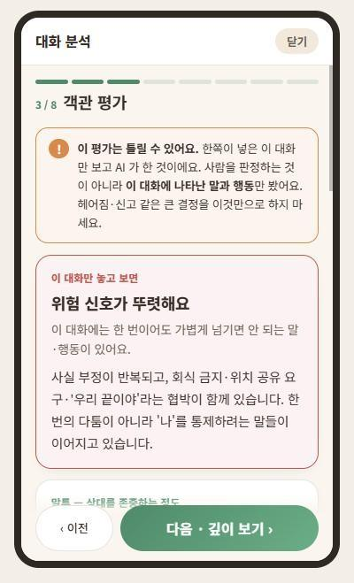
결과에서 꼭 볼 것
- 객관 평가 — 상대의 말투가 존중하는지, 함께하면 좋은 사람인지, 내 말에는 문제가 없는지까지 근거를 들어 보여 줘요.
- 앞날 — 선택지마다 1주·한 달 뒤 어떻게 될지 나란히 보여 줘요.
- 결론과 행동 — 돌려 말하지 않아요. 왕따라면 학교·전학 절차를, 통제하는 연인이라면 안전하게 끝내는 순서와 도움받을 곳을 알려 줘요.
- 알면서도 못 빠져나오는 이유 — 마지막에 "왜 못 빠져나오는지"를 묻고, 대답을 들은 뒤 다시 짚어 줘요.
- 이어서 상담 — 결과를 들고 원하는 AI 상담사와 바로 이어서 이야기할 수 있어요.
꼭 알아 두세요
한쪽이 넣은 대화만 보고 AI가 한 분석이라 틀릴 수 있어요. 헤어짐·신고 같은 큰 결정은 이것만으로 하지 마시고, 믿을 수 있는 사람이나 상담사와 한 번 더 이야기하세요. 대화는 이 기기에서 읽고, 이름·전화번호·계좌는 가린 뒤 고른 구간만 분석에 쓰고, 저장하지 않아요.9너무 힘들 때는 어떻게 하나요?
지금 스스로를 해칠 것 같다면 — 앱보다 먼저 전화하세요
- 109 자살예방 상담전화 (24시간, 무료)
- 1577-0199 정신건강 상담전화
- 119 응급 · 112 위험할 때
나의 안전 계획을 미리 만들어 두세요. 마이 › 나의 안전 계획에서 3분이면 만들어요. 괜찮을 때 적어 둔 계획이 무너지는 순간 큰 힘이 돼요.
- 나의 경고 신호 — 위기가 오기 전 나타나는 신호(잠을 못 잔다, 연락을 끊는다)
- 혼자서 나를 진정시키는 방법 — 산책, 샤워, 음악, 앱의 호흡
- 힘들 때 연락할 사람 — "나 지금 좀 힘들어"라고 말해도 되는 사람
- 그래도 살아갈 이유 — 소중한 것, 지키고 싶은 것
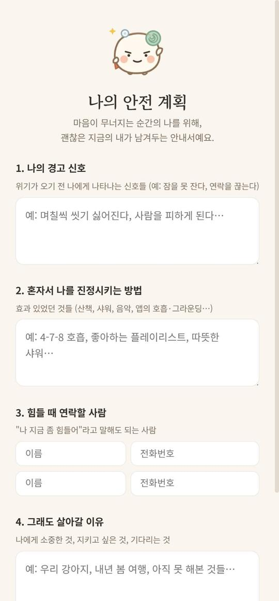
달님의 DBT 기술(멈추기, 몸으로 온도 낮추기, 감정 파도 타기)은 위기 전과 사이에 연습해 둘수록 위기 때 꺼내 쓸 수 있어요.
10사람 상담사와 상담하려면?
아래 전화 심리상담 칸에서 자격을 확인하고 입점한 심리상담사를 찾아요. 이름·상담소·전문 분야로 검색하고, 가까운 순·바로상담 가능만 골라 볼 수 있어요.
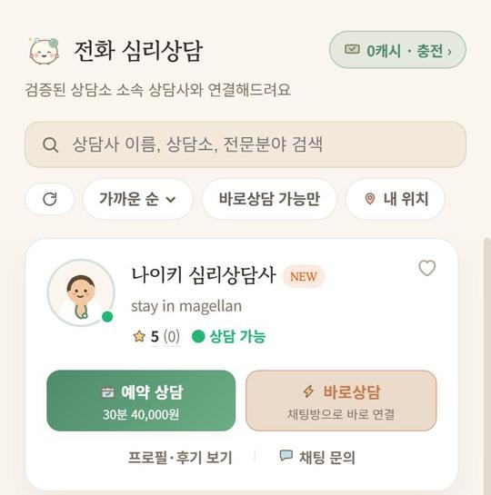
- 예약 상담 — 원하는 날짜·시간을 골라 예약해요. 30분 단위 가격이 카드에 보여요. 상담 30분 전에 알림이 와요.
- 바로상담 — 초록 점(상담 가능)인 상담사와 지금 바로 연결돼요. 쓴 만큼 캐시가 나가요.
- 채팅 문의 — 예약 전에 궁금한 걸 물어볼 수 있어요.
- 프로필·후기 보기 — 소개, 자격, 다른 분들의 후기.
취소·환불
- 상담사가 예약을 거절하거나 나타나지 않으면 전액 돌려받아요.
- 상담 24시간 안에 취소하면 상담료의 절반이 상담사에게 가요. 일정이 바뀌면 일찍 취소해 주세요.
- 상담이 끝나면 [확인]을 눌러 주세요. 문제가 있었다면 그때 이의를 남기면 운영팀이 살펴봐요.
11다니는 상담소와 연결하려면?
- 마이 › 다니던 상담소 연결하기다니는 상담소나 병원을 목록에서 골라 요청해요.
- 상담소가 수락하면 연결 끝상담소에서 받은 코드(H-로 시작)가 있으면 넣는 즉시 연결돼요.
- 무엇이 공유되나요상담사가 남긴 회기 기록과, 내가 동의한 경우 주간 기분 같은 숫자예요. AI와 나눈 대화 원문은 공유되지 않아요.
- 끊고 싶으면 언제든마이의 상담소 칸에서 [연결 끊기]를 누르면 바로 끊겨요. 그 뒤로는 아무것도 공유되지 않고, 다시 연결하고 싶으면 언제든 다시 하면 돼요. 수락 전이라면 [요청 취소].
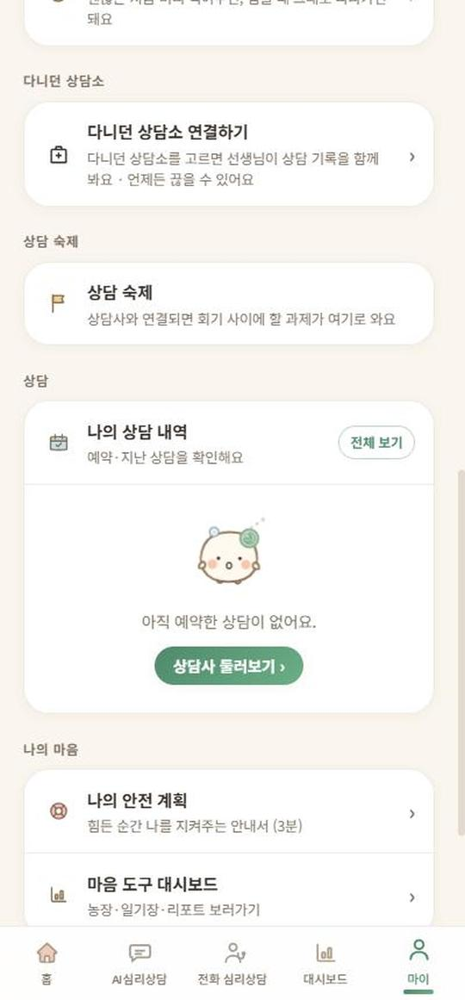
연결되면 담당 선생님이 회기 사이에 할 상담 숙제를 내 주고, 마이 › 상담 숙제에서 확인할 수 있어요.
12대시보드·우렁이 키우기는 뭔가요?
마음 돌봄을 매일 이어 가게 돕는 칸이에요. 체크인·퀘스트·하루 정리·사고 기록·호흡을 하면 물이 고이고, 우렁이가 자라요. 옷장·훈장·상점·농장에서 우렁이 방을 꾸미고, 사진을 찍어 커뮤니티 "우렁이 자랑방"에 자랑할 수 있어요.
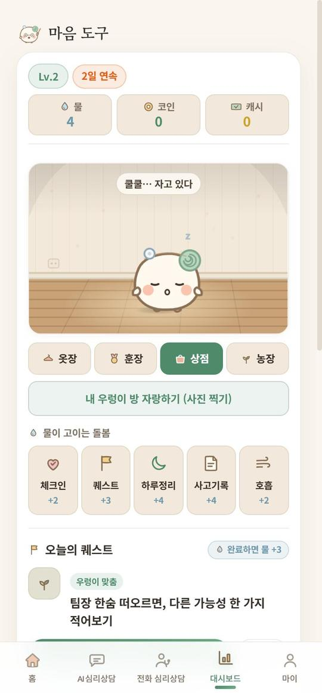
13ChatGPT에 쌓인 나를 가져올 수 있나요?
네. 마이 › 다른 AI가 아는 나 › [내 정보 가져오기]. 질문을 복사해서 쓰던 AI(ChatGPT·제미나이·클로드)에 붙여넣고, 받은 답을 다시 붙여넣으면 돼요. 1분이면 끝나고, 처음부터 다시 설명하지 않아도 나에게 맞춰 상담해요.
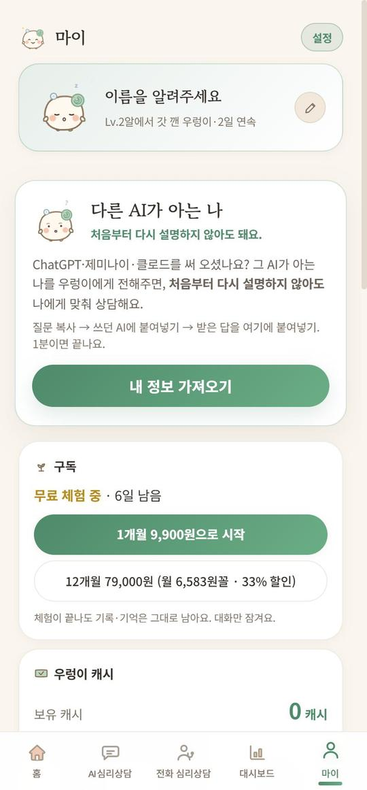
14내 대화는 누가 보나요?
- AI와 나눈 대화 원문은 본인 기기에만 저장돼요. 답을 만들 때만 AI 업체로 보내고, 상담사·상담소에도 전해지지 않아요.
- 기분 기록, 검사 점수, 상담 기록처럼 서비스에 필요한 정보만 서버에 저장해요.
- 로그인하면 기억과 리포트는 기기를 바꿔도 이어져요.
- 채팅 화면에서 대화를 초기화해도 리포트의 대화량 기록은 남아요.
- 자세한 내용은 앱의 개인정보처리방침에 있어요.
15커뮤니티는 어떻게 쓰나요?
앱 홈의 커뮤니티 칸이나 mindinside.kr 에서 열려요. 앱과 같은 계정으로 로그인하고, 글에는 별명만 보여요.
- 수다방 — 오늘 있었던 일, 아무 말 · 고민 Q&A — 상담사가 답해요 · 약 이야기 — 복용 경험 · 우렁이 자랑방
- 방금 올라온 — 첫 화면에서 모든 게시판의 새 글·새 댓글을 한눈에
- 알림 — 내 글에 댓글·공감, 담아 둔 글의 새 댓글, 공지가 오면 알려 줘요
- 마음건강 백과·약 정보 — 병과 약을 쉬운 말로
커뮤니티 약속
회원끼리 쪽지는 없어요. 연락처 교환, 자해·자살 방법, 특정 약 권유·용량 이야기는 가려져요. 힘든 마음은 고민 Q&A에 털어놓고, 위급하면 109로 전화하세요.16돈이 드나요?
- 처음 7일은 무료 체험이에요. 이후 AI 상담은 구독(1개월 9,900원, 12개월 79,000원)이에요. 체험이 끝나도 기록과 기억은 그대로 남고 대화만 잠겨요.
- 사람 상담사 상담과 대화 분석 "전체"는 캐시로 내요. 마이 › 우렁이 캐시에서 충전해요.
- 커뮤니티, 기분 기록, 솔숲 명상, 안전 계획은 무료예요.